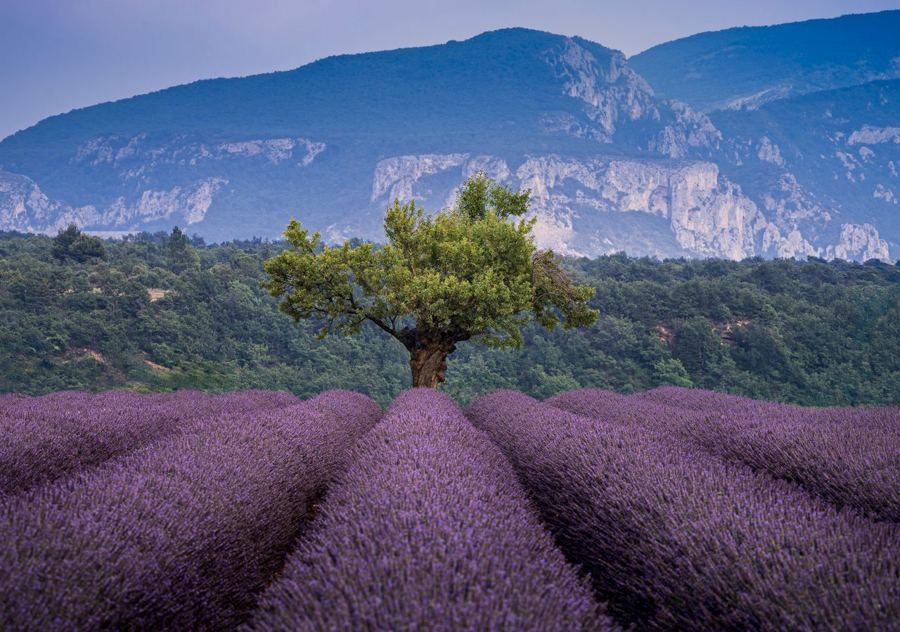
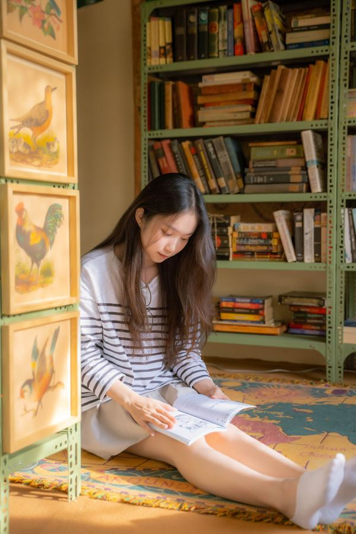
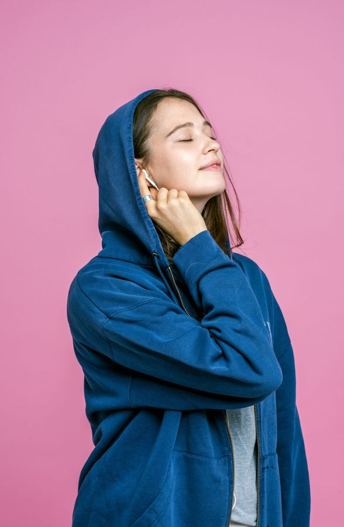
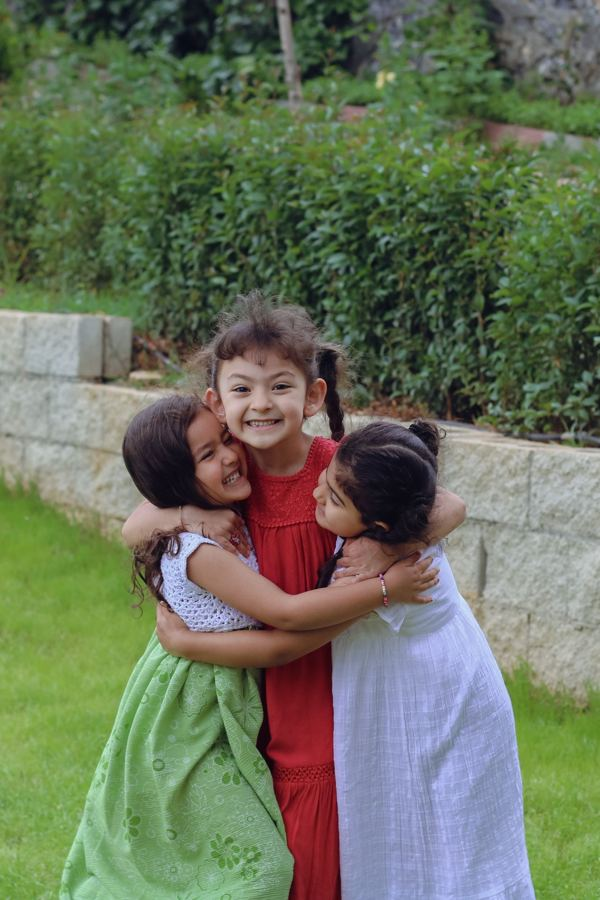
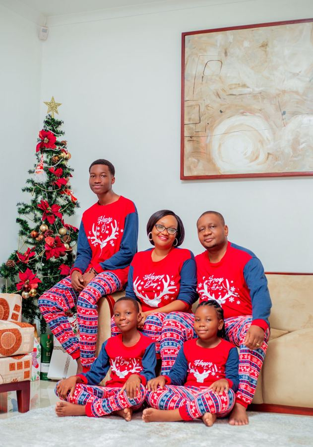
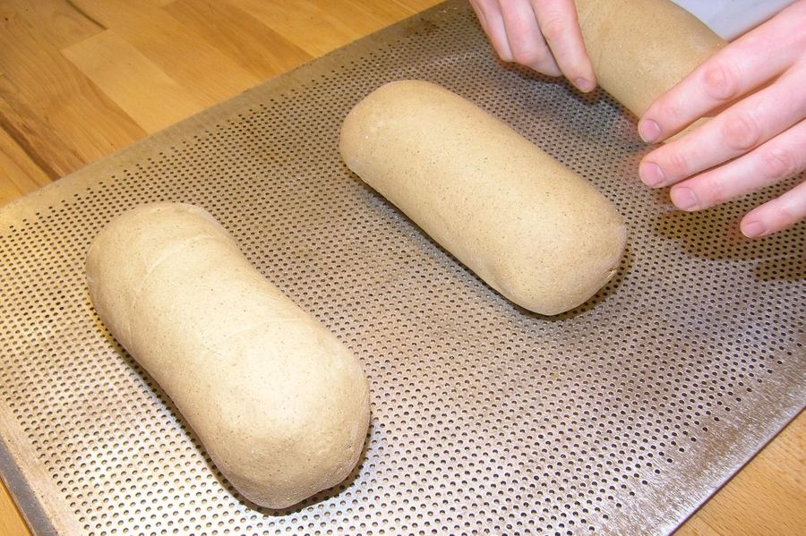
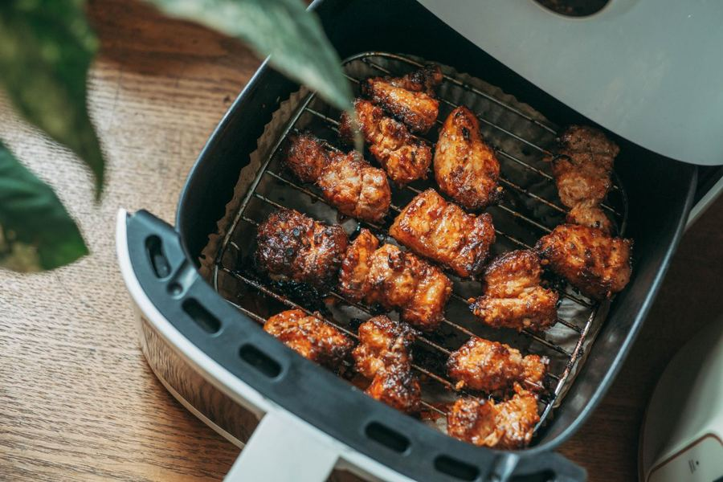
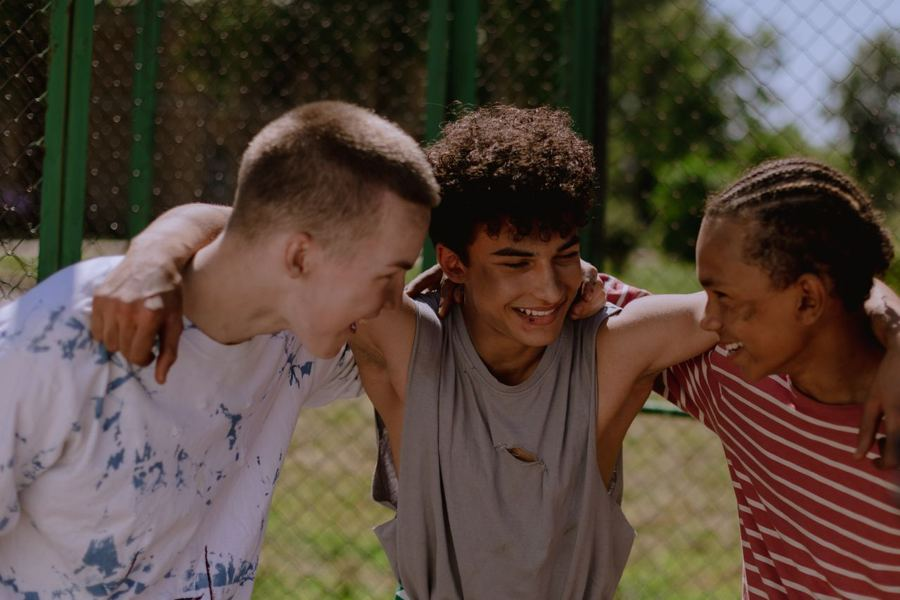
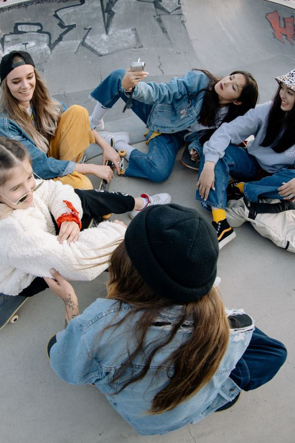
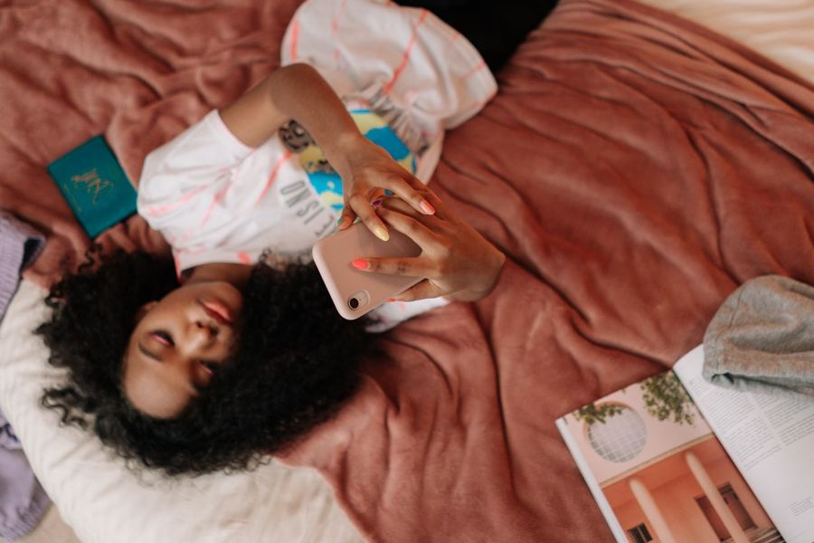

MERCREDI 18 NOVEMBRE 2026
Vocabulaire, expressions et grammaireRequins, câlins et portable · les pronoms COD et COISquali, coccole e cellulare · i pronomi diretti e indiretti
Champs de lavande, plateau de Valensole
Les falaises d'Étretat, Normandie
Le lac d'Annecy au coucher du soleil
Les gorges du Verdon, Provence

Lavande et montagnes, Haute-ProvenceL'Aiguille d'Étretat
Annecy, au bord du lac
Le canyon du Verdon vu d'en haut
La France tourne pour toi ✨ touche pour l'arrêter · tocca per fermarla
Bonjour Alice ! Aujourd'hui, on nage avec les requins, on prépare des frites dans la friteuse à air et on discute par SMS avec Léa, une copine française.
Ciao Alice! Oggi nuotiamo con gli squali, prepariamo le patatine nella friggitrice ad aria e chattiamo per SMS con Léa, un'amica francese.
Touche une carte pour la retourner, le haut-parleur 🔊 pour écouter et IT pour la traduction. Essaie d'abord sans !
Tocca una carta per girarla, l'altoparlante 🔊 per ascoltare e IT per la traduzione. Prova prima senza!
Tout est sauvegardé automatiquement : tes réponses, ton score et ton texte. Tu peux fermer la page et la rouvrir plus tard, tu retrouveras tout.
Tutto viene salvato automaticamente: le tue risposte, il tuo punteggio e il tuo testo. Puoi chiudere la pagina e riaprirla più tardi, ritroverai tutto.
Ce qu'Alice aime · tocca un medaglione 🔊

Les livres ? Je les dévore !
Lire

La musique ? Je l'écoute tout le temps !
La musique
Le volley ? Je l'adore !
Le volley
La piscine ? Je la connais par cœur !
La natation
1
Vocabulaire et expressions
Vocabolario ed espressioni
A
Dans l'eau et en mouvement
In acqua e in movimento
la poitrine
nom féminin
Une nageuse sous l'eau, en pleine brasse
↻ touche pour retourner · tocca per girare
la poitrine il petto, il torace
La poitrine, c'est le haut du corps, devant, entre le cou et le ventre.
La poitrine è la parte alta del corpo, davanti, tra il collo e la pancia.
En brasse, on ramène les mains devant la poitrine, puis on pousse l'eau.
A rana si riportano le mani davanti al petto, poi si spinge l'acqua.
Après la course, j'avais mal à la poitrine.
Dopo la corsa mi faceva male il petto.
On dit aussi le torse, et le thorax en biologie. Respirer à pleins poumons = respirare a pieni polmoni.
Si dice anche le torse, e le thorax in biologia. Respirer à pleins poumons = respirare a pieni polmoni.
↻
le requin
nom masculin
Un requin dans le bleu de l'océan
↻ touche pour retourner · tocca per girare
le requin lo squalo
Le grand requin blanc peut mesurer plus de six mètres.
Il grande squalo bianco può misurare più di sei metri.
À l'aquarium de Monaco, on peut observer des requins de très près.
All'acquario di Monaco si possono osservare gli squali da vicinissimo.
Au figuré, un requin est une personne sans pitié dans les affaires : c'est un vrai requin !
In senso figurato, un requin è una persona spietata negli affari: è un vero squalo!
↻
bouger
verbe
Des amis qui bougent au rythme de la musique
↻ touche pour retourner · tocca per girare
bouger muoversi, spostare
Bouger, c'est se mettre en mouvement. Il n'est pas pronominal : on dit je bouge, et non « je me bouge ».
Bouger significa mettersi in movimento. Non è riflessivo: si dice je bouge, non « je me bouge ».
Quand j'écoute de la musique, je ne peux pas m'empêcher de bouger.
Quando ascolto la musica, non riesco a stare ferma.
Au volley, si on ne bouge pas, le ballon tombe !
A pallavolo, se non ci si muove, la palla cade!
Nous bougeons : on garde le e devant -ons. Bouger un meuble = spostare un mobile. Familier : Bouge-toi ! = Datti una mossa!
Nous bougeons: si mantiene la e davanti a -ons. Bouger un meuble = spostare un mobile. Familiare: Bouge-toi! = Datti una mossa!
↻

un traumatisme
nom masculin
Une salle de cinéma, pendant un film qui fait peur
↻ touche pour retourner · tocca per girare
un traumatisme un trauma
Après avoir vu Les Dents de la mer, mon père a gardé un petit traumatisme : il ne nage plus loin du bord !
Dopo aver visto Lo squalo, mio padre è rimasto un po' traumatizzato: non nuota più lontano dalla riva!
Un choc à la tête peut provoquer un traumatisme crânien.
Un colpo alla testa può provocare un trauma cranico.
traumatiser (verbe) · traumatisant (adjectif) : un film traumatisant. Familier : Ce film m'a traumatisée !
traumatiser (verbo) · traumatisant (aggettivo): un film traumatizzante. Familiare: Questo film mi ha traumatizzata!
↻
une limite, des limites
nom féminin
Les lignes d'eau d'une piscine
↻ touche pour retourner · tocca per girare
une limite, des limites un limite, dei limiti
Une limite est féminin en français, alors qu'en italien il limite est masculin.
Une limite è femminile in francese, mentre in italiano il limite è maschile.
Dans la piscine, les lignes d'eau marquent la limite de chaque couloir.
In piscina, le corsie segnano il limite di ogni corsia.
Mes parents me fixent des limites, mais ils me font confiance.
I miei genitori mi danno dei limiti, ma si fidano di me.
fixer des limites = porre dei limiti · dépasser les limites = superare i limiti · la date limite = la scadenza.
fixer des limites = porre dei limiti · dépasser les limites = superare i limiti · la date limite = la scadenza.
↻
B
À la maison, en famille
A casa, in famiglia

faire des câlins (à quelqu'un)
expression
Un gros câlin entre amies
↻ touche pour retourner · tocca per girare
faire des câlins (à quelqu'un) fare le coccole, abbracciare con affetto
Après le match, toute l'équipe de volley s'est fait un gros câlin.
Dopo la partita, tutta la squadra di pallavolo si è abbracciata forte.
Mon chat adore les câlins.
Il mio gatto adora le coccole.
On fait un câlin à quelqu'un : c'est un COI. Je lui fais un câlin. Je leur fais un câlin.
Si fa un câlin a qualcuno: è un complemento indiretto. Je lui fais un câlin. Je leur fais un câlin.
↻

des pyjamas assortis
nom masculin + adjectif
Une famille en pyjamas assortis pour Noël
↻ touche pour retourner · tocca per girare
des pyjamas assortis pigiami coordinati, abbinati
Assorti = qui va bien avec autre chose (même couleur, même style). Il s'accorde : un pull assorti, une écharpe assortie, des chaussettes assorties.
Assorti = che si abbina a qualcos'altro (stesso colore, stesso stile). Si accorda: un maglione abbinato, una sciarpa abbinata, calzini abbinati.
À Noël, toute la famille porte des pyjamas assortis pour la photo.
A Natale tutta la famiglia indossa pigiami coordinati per la foto.
Elle a un sac assorti à ses chaussures.
Ha una borsa abbinata alle scarpe.
assorti à quelque chose. Au supermarché, des biscuits assortis = biscotti assortiti, misti.
assorti à qualcosa. Al supermercato, des biscuits assortis = biscotti assortiti, misti.
↻

la levure
nom féminin
Une pâte qui a bien levé grâce à la levure
↻ touche pour retourner · tocca per girare
la levure il lievito
La levure de boulanger sert pour le pain et la pizza. La levure chimique sert pour les gâteaux.
La levure de boulanger serve per il pane e la pizza. La levure chimique (il lievito per dolci) serve per le torte.
Sans levure, la pâte à pizza ne gonfle pas.
Senza lievito, l'impasto della pizza non cresce.
Pour le gâteau au yaourt, il faut un sachet de levure chimique.
Per la torta allo yogurt ci vuole una bustina di lievito per dolci.
La pâte lève (verbe lever) = l'impasto lievita.
La pâte lève (verbo lever) = l'impasto lievita.
↻

une friteuse à air
nom féminin
Du poulet croustillant dans une friteuse à air
↻ touche pour retourner · tocca per girare
une friteuse à air una friggitrice ad aria
Avec la friteuse à air, les frites sont croustillantes avec très peu d'huile.
Con la friggitrice ad aria, le patatine sono croccanti con pochissimo olio.
Ma mère fait cuire le poulet dans la friteuse à air.
Mia madre cuoce il pollo nella friggitrice ad aria.
Une friteuse classique utilise beaucoup d'huile. frire → frit → des frites. On entend aussi un air fryer.
Une friteuse classica usa molto olio. Frire (friggere) → frit → des frites (le patatine). Si sente anche un air fryer.
↻
une erreur
nom féminin !
Un crayon qui efface une petite erreur
↻ touche pour retourner · tocca per girare
une erreur un errore
Attention : une erreur est féminin en français, comme beaucoup de noms en -eur : la peur, la couleur, la chaleur, la douleur, la fleur.
Attenzione: une erreur è femminile in francese, come molti nomi in -eur: la paura, il colore, il caldo, il dolore, il fiore.
J'ai fait une petite erreur dans mon exercice, mais je l'ai corrigée.
Ho fatto un piccolo errore nel mio esercizio, ma l'ho corretto.
C'est une erreur de croire tout ce qu'on lit sur Internet.
È un errore credere a tutto quello che si legge su Internet.
par erreur = per sbaglio. Mais attention : le bonheur, le malheur et l'honneur sont masculins.
par erreur = per sbaglio. Ma attenzione: le bonheur (la felicità), le malheur (la sfortuna) e l'honneur (l'onore) sono maschili.
↻
C
Le portable, les amis et nous
Il cellulare, gli amici e noi
l'utilisation (du portable)
nom féminin
Deux amies, chacune sur son portable
↻ touche pour retourner · tocca per girare
l'utilisation (du portable) l'uso (del cellulare)
utiliser → l'utilisation. On peut dire aussi l'usage du portable.
utiliser → l'utilisation. Si può dire anche l'usage du portable.
En France, l'utilisation du portable est interdite au collège.
In Francia l'uso del cellulare è vietato alle medie.
Mes parents surveillent mon utilisation des réseaux sociaux.
I miei genitori controllano il mio uso dei social.
le portable = il cellulare (on dit aussi le téléphone, le smartphone). Le mode d'emploi = le istruzioni per l'uso.
le portable = il cellulare (si dice anche le téléphone, le smartphone). Le mode d'emploi = le istruzioni per l'uso.
↻
un enregistrement
nom masculin
Un micro et un casque, prêts pour l'enregistrement
↻ touche pour retourner · tocca per girare
un enregistrement una registrazione
J'écoute l'enregistrement de ma chanson préférée en version live.
Ascolto la registrazione della mia canzone preferita in versione live.
Elle m'a envoyé un enregistrement au lieu d'écrire un message.
Mi ha mandato una registrazione invece di scrivere un messaggio.
enregistrer = registrare, salvare. À l'aéroport, l'enregistrement = il check-in.
enregistrer = registrare, salvare. All'aeroporto, l'enregistrement = il check-in.
↻

ceux et celles
pronoms démonstratifs
Ceux et celles de la bande
↻ touche pour retourner · tocca per girare
ceux et celles quelli e quelle, coloro che
celui (masc. sing.) · celle (fém. sing.) · ceux (masc. plur.) · celles (fém. plur.). Ils sont suivis de qui, que, de…
celui (masch. sing.) · celle (femm. sing.) · ceux (masch. plur.) · celles (femm. plur.). Sono seguiti da qui, que, de…
Ceux qui jouent au foot s'entraînent le mardi, celles qui jouent au volley, le jeudi.
Quelli che giocano a calcio si allenano il martedì, quelle che giocano a pallavolo il giovedì.
Ces écouteurs ? Ce sont ceux de Léa !
Queste cuffiette? Sono quelle di Léa!
Ceux et celles qui = tutti quelli e quelle che. Ceux et celles qui ont fini peuvent sortir.
Ceux et celles qui = tutti quelli e quelle che. Chi ha finito può uscire.
↻

essayer de deviner
expression
Un jeu entre amis : essaie de deviner !
↻ touche pour retourner · tocca per girare
essayer de deviner cercare di indovinare
Essaie de deviner qui m'a écrit ce message !
Prova a indovinare chi mi ha scritto questo messaggio!
Dans ce jeu, il faut deviner le titre de la chanson en trois secondes.
In questo gioco bisogna indovinare il titolo della canzone in tre secondi.
essayer de + infinitif. Devine ! = Indovina! · une devinette = un indovinello.
essayer de + infinito. Devine! = Indovina! · une devinette = un indovinello.
↻
2
Grammaire : les pronoms COD et COI
Grammatica: i pronomi diretti e indiretti
Les pronoms COD : le, la, l', les
I pronomi diretti
Le COD (complément d'objet direct) répond à la question qui ? ou quoi ?. Le verbe se construit sans préposition : regarder quelque chose, aimer quelqu'un, aider quelqu'un.
Il complemento oggetto risponde alla domanda chi? o che cosa?. Il verbo si costruisce senza preposizione: guardare qualcosa, amare qualcuno, aiutare qualcuno.
| personne | COD | COI | italiano |
| je | mi | ||
| tu | ti | ||
| il / elle | lo, la · gli, le | ||
| nous | ci | ||
| vous | vi | ||
| ils / elles | li, le · gli, loro |
Le match de volley ? Je le regarde à la télé.
La partita di pallavolo? La guardo in TV.
Ma meilleure amie ? Je la vois tous les jours au volley.
La mia migliore amica? La vedo ogni giorno a pallavolo.
Cette chanson ? Je l'écoute en boucle.
Questa canzone? L'ascolto a ripetizione.
Mes écouteurs ? Je les cherche partout !
Le mie cuffiette? Le cerco dappertutto!
Devant une voyelle ou un h muet : le, la → l' · me → m' · te → t'. Je t'attends à la piscine.
Davanti a vocale o h muta: le, la → l' · me → m' · te → t'. Ti aspetto in piscina.
Les pronoms COI : lui, leur
I pronomi indiretti
Le COI répond à la question à qui ?. Le verbe se construit avec à + une personne : parler à, téléphoner à, écrire à, répondre à, envoyer à, donner à, dire à, demander à, sourire à, faire un câlin à.
Il complemento indiretto risponde alla domanda a chi?. Il verbo si costruisce con à + una persona: parlare a, telefonare a, scrivere a, rispondere a, mandare a, dare a, dire a, chiedere a, sorridere a, abbracciare.
Je téléphone à ma grand-mère. → Je lui téléphone.
Telefono a mia nonna. → Le telefono.
J'écris à mon père. → Je lui écris.
Scrivo a mio padre. → Gli scrivo.
Je réponds à mes amies. → Je leur réponds.
Rispondo alle mie amiche. → Rispondo loro.
lui = gli et le : masculin et féminin ! leur = gli, loro : il ne prend jamais de -s quand c'est un pronom.
lui = gli e le: maschile e femminile! leur = gli, loro: non prende mai la -s quando è un pronome.
Ne confonds pas : je leur envoie leurs photos. Le premier est un pronom (invariable), le second un adjectif possessif.
Non confondere: mando loro le loro foto. Il primo è un pronome (invariabile), il secondo un aggettivo possessivo.
COD ou COI ? Comment choisir
Diretto o indiretto? Come scegliere
verbe+quelqu'un / quelque chose→le, la, l', les
verbe+à quelqu'un→lui, leur
J'aide ma copine (aider quelqu'un). → Je l'aide.
Aiuto la mia amica. → La aiuto.
Je parle à ma copine (parler à quelqu'un). → Je lui parle.
Parlo alla mia amica. → Le parlo.
me, te, nous, vous ne changent pas : ils sont COD ou COI. Tu m'appelles ? Tu me réponds ?
me, te, nous, vous non cambiano: sono diretti o indiretti. Mi chiami? Mi rispondi?
Avec à + une chose, on n'utilise pas lui : on utilise y. Je pense à mon match → j'y pense.
Con à + una cosa non si usa lui: si usa y. Penso alla mia partita → ci penso.
La place du pronom
La posizione del pronome
| présent | La guardo. | |
| négation | Non la guardo. | |
| passé composé | L'ho guardata. | |
| + infinitif | La guarderò. | |
| impératif | Guardala! Scrivimi! | |
| impératif négatif | Non guardarla! |
En français, le pronom se place devant le verbe, même avec un infinitif : je vais lui écrire (scriverle). Seule exception : l'impératif affirmatif, avec un trait d'union, où me, te deviennent moi, toi : Appelle-moi !
In francese il pronome va davanti al verbo, anche con l'infinito: je vais lui écrire (scriverle). Unica eccezione: l'imperativo affermativo, con il trattino, dove me, te diventano moi, toi: Chiamami!
L'accord du participe passé
L'accordo del participio passato
Au passé composé avec avoir, le participe passé s'accorde avec le COD placé avant le verbe. Comme en italien : l'ho vista, le ho prese.
Al passé composé con avoir, il participio passato si accorda con il complemento oggetto posto prima del verbo. Come in italiano: l'ho vista, le ho prese.
Ma copine ? Je l'ai vue à la piscine.
La mia amica? L'ho vista in piscina.
Ces photos ? Je les ai prises à Étretat.
Queste foto? Le ho scattate a Étretat.
Tes écouteurs ? Je les ai mis dans ton sac.
Le tue cuffiette? Le ho messe nella tua borsa.
Pas d'accord avec un COI : Mes amies ? Je leur ai parlé hier. Ma mère ? Je lui ai téléphoné.
Nessun accordo con il complemento indiretto: Le mie amiche? Ho parlato loro ieri. Mia madre? Le ho telefonato.
3
Exercices
Esercizi
1
EXERCICE · VOCABULAIRE
Alice, choisis le mot qui convient.
Alice, scegli la parola giusta.
1
Pour faire gonfler la pâte à pizza, il faut de la ______.
Per far crescere l'impasto della pizza ci vuole il lievito.
Pour faire gonfler la pâte à pizza, il faut de la levure.
Per far crescere l'impasto della pizza ci vuole il lievito.
2
À Noël, nous portons tous des pyjamas ______ : rouges, avec des rennes.
A Natale indossiamo tutti pigiami coordinati: rossi, con le renne.
À Noël, nous portons tous des pyjamas assortis : rouges, avec des rennes.
A Natale indossiamo tutti pigiami coordinati: rossi, con le renne.
3
Au volley, si tu ne ______ pas, tu ne touches jamais le ballon !
A pallavolo, se non ti muovi, non tocchi mai la palla!
Au volley, si tu ne bouges pas, tu ne touches jamais le ballon !
A pallavolo, se non ti muovi, non tocchi mai la palla!
4
Le ______ est un poisson qui fait peur à beaucoup de nageurs.
Lo squalo è un pesce che fa paura a molti nuotatori.
Le requin est un poisson qui fait peur à beaucoup de nageurs.
Lo squalo è un pesce che fa paura a molti nuotatori.
5
Mon chat adore les ______ : il vient se blottir contre moi.
Il mio gatto adora le coccole: viene ad accoccolarsi contro di me.
Mon chat adore les câlins : il vient se blottir contre moi.
Il mio gatto adora le coccole: viene ad accoccolarsi contro di me.
6
Écoute cet ______ : c'est moi qui chante !
Ascolta questa registrazione: sono io che canto!
Écoute cet enregistrement : c'est moi qui chante !
Ascolta questa registrazione: sono io che canto!
7
______ qui ont fini peuvent sortir, celles qui n'ont pas fini restent.
Quelli che hanno finito possono uscire, quelle che non hanno finito restano.
Ceux qui ont fini peuvent sortir, celles qui n'ont pas fini restent.
Quelli che hanno finito possono uscire, quelle che non hanno finito restano.
8
Je te donne trois indices : essaie de ______ !
Ti do tre indizi: prova a indovinare!
Je te donne trois indices : essaie de deviner !
Ti do tre indizi: prova a indovinare!
9
Les parents doivent fixer des ______ à l'utilisation du portable.
I genitori devono porre dei limiti all'uso del cellulare.
Les parents doivent fixer des limites à l'utilisation du portable.
I genitori devono porre dei limiti all'uso del cellulare.
10
Avec la ______, les frites sont croustillantes sans beaucoup d'huile.
Con la friggitrice ad aria, le patatine sono croccanti senza molto olio.
Avec la friteuse à air, les frites sont croustillantes sans beaucoup d'huile.
Con la friggitrice ad aria, le patatine sono croccanti senza molto olio.
2
EXERCICE · MASCULIN OU FÉMININ ?
Choisis l'article. Attention, l'italien peut te tromper !
Scegli l'articolo. Attenzione, l'italiano può ingannarti!
1
______ erreur
un errore
une erreur
un errore
2
______ limite
un limite
une limite
un limite
3
______ requin
uno squalo
un requin
uno squalo
4
______ traumatisme
un trauma
un traumatisme
un trauma
5
______ couleur
un colore
une couleur
un colore
6
______ enregistrement
una registrazione
un enregistrement
una registrazione
7
______ levure
un lievito
une levure
un lievito
8
______ utilisation
un uso, un utilizzo
une utilisation
un uso, un utilizzo
3
EXERCICE · COD OU COI ?
Choisis le bon pronom.
Scegli il pronome giusto.
1
Ta meilleure amie ? Tu ______ fais un câlin quand elle est triste ?
La tua migliore amica? La abbracci quando è triste?
Ta meilleure amie ? Tu lui fais un câlin quand elle est triste ?
La tua migliore amica? La abbracci quando è triste?
2
Le livre que je t'ai prêté ? Je ______ ai lu en deux jours.
Il libro che ti ho prestato? L'ho letto in due giorni.
Le livre que je t'ai prêté ? Je l'ai lu en deux jours.
Il libro che ti ho prestato? L'ho letto in due giorni.
3
Tes parents ? Tu ______ montres tes messages ?
I tuoi genitori? Mostri loro i tuoi messaggi?
Tes parents ? Tu leur montres tes messages ?
I tuoi genitori? Mostri loro i tuoi messaggi?
4
Cette chanson ? Je ______ écoute en boucle.
Questa canzone? L'ascolto a ripetizione.
Cette chanson ? Je l'écoute en boucle.
Questa canzone? L'ascolto a ripetizione.
5
Ton entraîneur de volley ? Je ______ ai demandé de changer l'horaire.
Il tuo allenatore di pallavolo? Gli ho chiesto di cambiare l'orario.
Ton entraîneur de volley ? Je lui ai demandé de changer l'horaire.
Il tuo allenatore di pallavolo? Gli ho chiesto di cambiare l'orario.
6
Les requins ? Moi, je ______ trouve fascinants !
Gli squali? Io li trovo affascinanti!
Les requins ? Moi, je les trouve fascinants !
Gli squali? Io li trovo affascinanti!
7
Ta mère ? Je ______ ai aidée à préparer le gâteau.
Tua madre? L'ho aiutata a preparare la torta.
Ta mère ? Je l'ai aidée à préparer le gâteau.
Tua madre? L'ho aiutata a preparare la torta.
8
Tes amies ? Je ______ envoie l'enregistrement ce soir.
Le tue amiche? Mando loro la registrazione stasera.
Tes amies ? Je leur envoie l'enregistrement ce soir.
Le tue amiche? Mando loro la registrazione stasera.
9
Ces écouteurs ? Rends-______ à Léa !
Queste cuffiette? Restituiscile a Léa!
Ces écouteurs ? Rends-les à Léa !
Queste cuffiette? Restituiscile a Léa!
10
Mon message ? Ne ______ lis pas à voix haute !
Il mio messaggio? Non leggerlo ad alta voce!
Mon message ? Ne le lis pas à voix haute !
Il mio messaggio? Non leggerlo ad alta voce!
4
EXERCICE · SMS AVEC LÉA
Léa t'écrit ! Complète les messages avec le bon pronom.
Léa ti scrive! Completa i messaggi con il pronome giusto.
L
Léa 🏐
● en ligne
5
EXERCICE · REMPLACE PAR UN PRONOM
Écris la partie qui manque avec un pronom. Attention à l'accord du participe passé !
Scrivi la parte che manca con un pronome. Attenzione all'accordo del participio passato!
J'ai vu ma copine à la piscine.
1
Je ______ à la piscine.
L'ho vista in piscina.
Je l'ai vue à la piscine.
L'ho vista in piscina.
J'ai téléphoné à ma grand-mère hier soir.
2
Je ______ hier soir.
Le ho telefonato ieri sera.
Je lui ai téléphoné hier soir.
Le ho telefonato ieri sera.
Je vais écouter ces chansons demain.
3
Je ______ demain.
Le ascolterò domani.
Je vais les écouter demain.
Le ascolterò domani.
Je n'ai pas fait les exercices hier.
4
Je ______ hier.
Non li ho fatti ieri.
Je ne les ai pas faits hier.
Non li ho fatti ieri.
J'ai envoyé un message à mes amies.
5
Je ______ ai envoyé un message.
Ho mandato loro un messaggio.
Je leur ai envoyé un message.
Ho mandato loro un messaggio.
Écoute ta mère !
6
______ !
Ascoltala!
Écoute-la !
Ascoltala!
J'ai pris ces photos à Étretat.
7
Je ______ à Étretat.
Le ho scattate a Étretat.
Je les ai prises à Étretat.
Le ho scattate a Étretat.
6
EXERCICE · LES MOTS DANS L'ORDRE
Touche les mots dans le bon ordre pour construire la phrase.
Tocca le parole nell'ordine giusto per costruire la frase.
1Non la guardo.
Je ne la regarde pas.
2Le scrivi stasera?
Tu vas lui écrire ce soir ?
3Li ho messi nella mia borsa.
Je les ai rangés dans mon sac.
4Non dire loro niente!
Ne leur dis rien !
5Non l'abbiamo vista.
Nous ne l'avons pas vue.
7
EXERCICE · TRADUCTION
Traduis en français, puis compare avec la correction.
Traduci in francese, poi confronta con la correzione.
1Le ho mandato una registrazione.
Je lui ai envoyé un enregistrement.
Ta traduction est correcte ?
2Questi pigiami coordinati? Li ho comprati per Natale.
Ces pyjamas assortis ? Je les ai achetés pour Noël.
Ta traduction est correcte ?
3Ho fatto un errore: l'ho corretto subito.
J'ai fait une erreur : je l'ai corrigée tout de suite.
Ta traduction est correcte ?
4Chiamami quando arrivi in piscina!
Appelle-moi quand tu arrives à la piscine !
Ta traduction est correcte ?
5I miei genitori? Non ho ancora detto loro niente.
Mes parents ? Je ne leur ai encore rien dit.
Ta traduction est correcte ?
8
RÉFLEXION · FACULTATIVE
Le portable : faut-il fixer des limites ?
Il cellulare: bisogna porre dei limiti?

Allongée sur le lit, le portable à la main
Aujourd'hui, presque tous les adolescents ont un portable. On l'utilise pour écrire à ses amis, écouter de la musique, lire, faire des recherches… et parfois, on ne le lâche plus !
Oggi quasi tutti gli adolescenti hanno un cellulare. Lo usiamo per scrivere agli amici, ascoltare musica, leggere, fare ricerche… e a volte non lo molliamo più!
En France comme en Italie, l'utilisation du portable est interdite en classe. Beaucoup de parents fixent aussi des limites à la maison : pas de téléphone à table, ni la nuit dans la chambre.
In Francia come in Italia l'uso del cellulare è vietato in classe. Molti genitori pongono dei limiti anche a casa: niente telefono a tavola, né di notte in camera.
Mais qui doit fixer ces limites : l'école, les parents… ou les adolescents eux-mêmes ?
Ma chi deve porre questi limiti: la scuola, i genitori… o gli adolescenti stessi?
Pour trouver tes idées · per trovare le idee
• Combien de temps passes-tu sur ton portable chaque jour ? Le sais-tu vraiment ?
Quanto tempo passi sul cellulare ogni giorno? Lo sai davvero?
• À quoi est-ce que tu l'utilises le plus : écrire à tes amis, écouter de la musique, lire ?
Per cosa lo usi di più: scrivere agli amici, ascoltare musica, leggere?
• Est-ce que tes parents te fixent des limites ? Est-ce que tu les trouves justes ?
I tuoi genitori ti danno dei limiti? Li trovi giusti?
• Ceux et celles qui n'ont pas de portable sont-ils mis à l'écart du groupe ?
Chi non ha il cellulare viene escluso dal gruppo?
• Si tu étais parent, quelles règles fixerais-tu à tes enfants ?
Se tu fossi genitore, quali regole daresti ai tuoi figli?
Mots utiles · parole utili
Organise ton texte · organizza il testo
1
Introduction : présente le sujet et pose la question.
Introduzione: presenta l'argomento e poni la domanda.
Aujourd'hui, le portable fait partie de notre vie…
2
D'un côté : ce que le portable nous apporte.
Da un lato: cosa ci dà il cellulare.
D'un côté, il nous permet de…
3
De l'autre : les risques, et pourquoi des limites sont utiles.
Dall'altro: i rischi, e perché i limiti sono utili.
De l'autre, si on l'utilise trop…
4
Conclusion : ton avis personnel.
Conclusione: la tua opinione personale.
À mon avis, ce sont ceux et celles qui…
Défi : utilise au moins trois pronoms COD ou COI dans ton texte (le, la, les, lui, leur…).
Sfida: usa almeno tre pronomi diretti o indiretti nel tuo testo (le, la, les, lui, leur…).
0 mots · parole✓ Enregistré automatiquement · salvato automaticamente
Quand ton texte est prêt, touche ce bouton, puis colle le texte dans ton message à Irène.
Quando il tuo testo è pronto, tocca questo pulsante, poi incolla il testo nel tuo messaggio a Irène.
À revoir · da ripassare
Chaque erreur renvoie à la règle. · Ogni errore rimanda alla regola.
💾 Ta progression est sauvegardée · i tuoi progressi sono salvati
Tout est enregistré automatiquement dans ce document : tes réponses, ton score, tes messages à Léa, tes traductions et ton texte. Tu peux fermer la page et la rouvrir avec le même lien quand tu veux, tu retrouveras tout exactement où tu l'as laissé. Pour continuer sur un autre appareil, crée un lien de reprise et ouvre-le là-bas.
Tutto viene salvato automaticamente in questo documento: le tue risposte, il punteggio, i messaggi a Léa, le traduzioni e il tuo testo. Puoi chiudere la pagina e riaprirla con lo stesso link quando vuoi: ritroverai tutto esattamente dove l'hai lasciato. Per continuare su un altro dispositivo, crea un link di ripresa e aprilo lì.